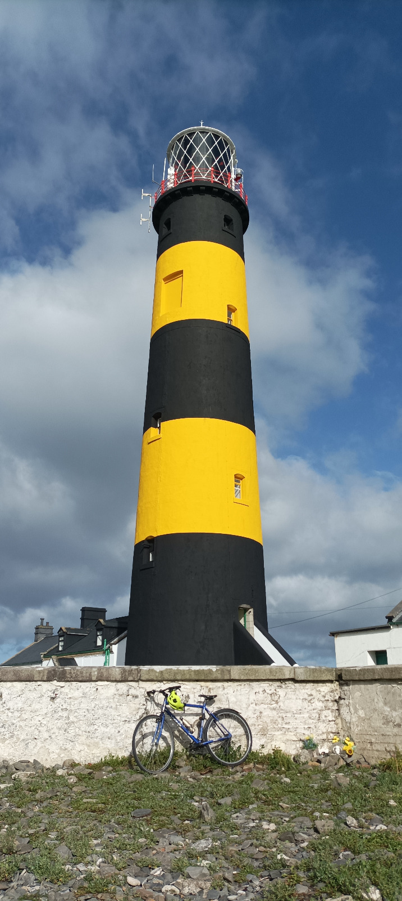
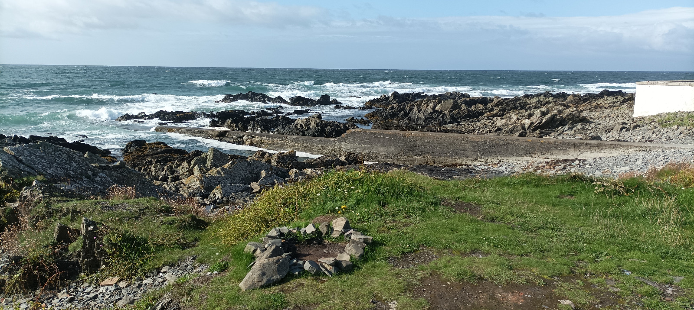
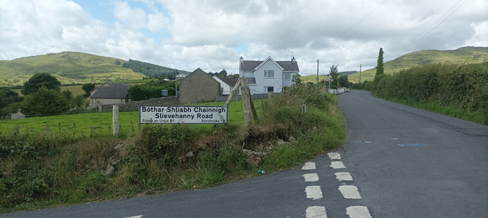

10 St John’s Point

My wife is says that this is how she wants to live. We are renting a mobile home in a field in the Dromora Hills, Co Down, and all around is green and open, with lumpy hills growing out the side of other lumps. It doesn’t matter if you are inside or out, you can watch the grass grow while washing the dishes or dining al fresco. Our son can run around like a gobshite and last night I stepped out into instant peace where I could get my bike ready for this morning. As soon as we crossed the border, she said this place was different. I told her she was talking bollocks but then I remembered that it is a different geological space up here and there’s every reason for it to look different, beyond the road markings and signposts.
It’s my birthday today, the big Four Oh, but I didn’t have it in me to organize any parties. I’ve not been myself since I got home from Spain, it’s been pissing rain every single day, and I haven’t even once gone to the beach with the chunfla. He’s pissing around our apartment with no school and little purpose. And I’m just frustrated, squirrelling away money for an expensive shite gaff, doing a well-paid job that brings me down. We’re not sure if we can go on holiday holidays while my dad recovers from his illness, although he no longer needs round the clock care. I’ve lost the confidence to just pick up the Tony and ask people to come and see me, but now that we are finally out of Dodge, I can feel my energy lifted. It’s good to be out with my little family, even if it’s only for a few days, and maybe when I’m forty-two I will have the answer to life, the universe and everything, and then we can all party.
<div class=“strava-embed-placeholder” data-embed-type=“activity” data-embed-id=“9543242861”></div><script src=“https://strava-embeds.com/embed.js”></script>
The trip today is fairly simple. I just have to descend towards the main road, turn left and make my way towards the coast thence hug the wide bay until the lighthouse. It’s a nice downhill start, with the odd uphill lump, although I’ve got Google maps in my ear telling me to turn left in 800 quote-unquote feet, which is a shite unit of travel. Yesterday I missed a right turn, driving up here, because I couldn’t believe that 200 feet could be so little. It was one of those frightening exits they love up here on their 1980s dual-cabbageways. You have to slow down in the fast lane and then pull across oncoming traffic and pray. When I was a kid, those roads looked so advanced, straight and bumpless, with a thick red hard shoulder, and we’d all be in awe as soon as we got through the army checkpoints at the border. But now the road quality highlights the lack of progress Up North while things have steadily improved Down South.
So I skip Google’s suggested route because I want to go to one of my favourite childhood memories, a silly valley on the road to Castlewellan, where the road goes down and then right back up again, like a BMX-ramp on roids. We used to come here because my mam’s best friend (Pauline) married a farmer from nearby (Tony), and they moved up from Dublin in the mid-Sixties, just before The Troubles kicked off. Pauline and Tony also had six kids, so we each had a partner child. They’d always stall down to Dublin for New Year’s Eve and stuff, with a carload of duvets and blankets. By the time I came along, we’d go on holidays to Sligo, every year, although by then it was just their younger kids and ours, jumping into the ocean waves, or stuck inside, playing Jack Changes and listening to Atlantic 252. It was only years later I found out that our gaff in Dublin had been their refuge, throughout the Seventies and Eighties, whenever things were spicy up North. But as things quietened down in the Nineties, ish, I found myself up here quite a lot, and I spent a whole week in Pauline & Tony’s as a seven year old while my folks went cycling along the Danube. I remember looking across the fields and being told of IRA training camps, although I always sensed that they were the enemy, and still to this day, when someone knocks on my front door in the middle of the night, I still think it’s the ’Ra, here to finally get me. I never heard anything about Brits or the UVF and my first memory of them was the Loughinisland Massacre, just a couple of miles from Pauline and Tony’s, as several people were gunned down while watching Ireland beating Italy in Giants Stadium during the 1994 World Cup. Who else would do that during the football?
I enter the valley near its trough, in a village called Annsborough, and there’s a signpost pointing to an integrated primary school. It’s astonishing that twenty-five years after the Good Friday aka Belfast Agreement, over 90% of children still go to segregated schools, so kids grow up without ever meeting anyone from the other side, until they go to uni or work. This even happened among Nordies who came Down South to Trinity, and I’ll never forget Den and Simon being mates, and drunkenly hugging each other cos they’d never known anyone from the other side. Sports are also informally segregated, with Catholics playing Gaelic Football, and Protestants playing soccer or rugby, depending on social class. Of course, The South is also segregated along similar lines. This is obvious to the tiny number of remaining Protestants who often go to schools with a historically Protestant ethos, and who can even avail of a grant towards their school fees. But it is not at all obvious to the vast majority of Catholics who simply never meet any of these Protestants. I only noticed this cos my primary school was inter-denominational, so like 70% Prods, and it was a big shock when I want to a Catholic secondary school and no one knew about marmite.
I decide I want to cycle up both hills so I turn right towards Castlewellan, away from my destination, and I stop for moment to rearrange my clothes, else I’ll be sweating my Brits off. It’s actually fine, no more than four or five percent, but it’s a good warm up for the lungs after a few clicks of morning descent, and I make it up in the big ring without having to worry about my misaligned front derailleur. I piss it back down and then back up the shallower side and I wonder how such a strange valley could occur. Maybe it is the meeting point of two mountain ranges. The edge of the Mourne Mountains on one side and the Dromora Hills on the other. I follow the road for seven clicks to Clough, and I’m glad it’s early on a Saturday cos it’s one of those fast one-lane roads that make for miserable cycling. Clough greets me with dozens of flags espressing the village identity. I’m well used to Union Jacks and Ulster flags, but these lads have several more I don’t recognise, and it is extremly intimidating. I stop for photos but it’s hard to capture the flags as they ruffle in the light breeze. I chicane right-left out of the down towards the coast and it’s quiet roads at last. With the hills behind me, I could be anywhere in Ireland’s Ancient East, bar the odd roadsigns (Humps ahead), and big statues of Our Lady outside the Catholic churches, marking territory. There’s a small bridge over a neatly patterned river estuary and a few minutes later I notice the soil looks sandy, as though I’m at the sea, and it turns out I am, so I nip down to Tyrella Beach for a sconce at the waves.
The beach is long and my lighthouse destination marks the end of the bay to the left slash north. There’s a fella parked on a camping chair and his hello is pure dead Ulster but his speech turns out to be Welsh and it turns out him and the wife and the mother-in-law drove 40 clicks here cos it’s an accessible beach. It takes me two or three gambits before I realise he’s properly up for the chats, so once we’ve smalltalked through local geography and the perils of Brexit for a Welshman going home from Nair Nairn, I throw in the rugby gambit, asking how things are in the Welsh camp, knowing that it’s obviously a shit show. Suddenly it’s like listening to myself banging on about the game, only much more informed, and he’s off on one now about interpretations of the law, and not just Barnesie versus Jaco Peyper, but his own reading of how the game should be played. Cos it turns out he used to be a referee before his accident, and I feel immeasurable pain for this crippled man who used to travel around Wales and England, facilitating joy. Instead, he’s plonked here, while his loved ones wander the length of the beach. His regrets are not the injury - at least not out loud - but rather than he didn’t start refereeing sooner, and I’m thinking I ought to get myself into it, potentially as the chunfla grows up, cos my future in the game is in those lone-ranger roles, refereeing, commentating and maybe coaching. I could yap all day to this man but I need to hit the Dermot and I leave him sat there with the wind blowing in his beard.

The rest of the cycle is bliss, following the coast road along the mellow bay. The road is quiet bar the odd motorbike troupe sampling the Mourne Coastal Route slash Strangford and Lecale Area of Outstanding Natural Beauty, a designation which reminds me of just how much beauty exists on this island, cos there is nothing outstandingly outstanding about it. I pass an Artist’s Gallery with a manicured garden right on the coast owned by one of those people who decided that they were going to buy a house on the sea and have a nice garden. It seems to be part of a lovely UK-wide initiative where passers-by can come and chillax in your Dexter Gordon as long as they throw a few shekels in the charity box, so I resolve to pop in on the way back if it’s open. A fork in the road leads to the lighthouse and before I turn down the final cul de sac, I stop to read a sign telling us to stay a-basically-way, as far as I can tell. But I’m confused that the website is irishlights.ie, rather than like Greenpeace or someone ecomological.
The clouds begin to part as I arrive at the lighthouse and it’s yellowy-yellowness beams out of the ground like a cross between a space rocket and an ice lolly. The approach is low and doesn’t feel peninsular, as there are fields to the right. But the lighthouse and its campus are surrounded by low rocks and if I didn’t know better, I’d nearly pop in for a swim or a cheeky bath in between the rocks. Any such fantasies are shattered when I see a shrine to Baby Noah who died here aged just fifteen months. Maybe he slipped and banged his head and got drowned by waves. Today would have been his seventh birthday and suddenly I’m a blubbering mess. You always feel a special connection to people who share your birthday. Snot drools out of my nose as I write him a birthday card. I think of Tiffer who died at 28, and all the fun of life that he missed out on. Poor little Noah only got one year at it and how must his parents feel. I can hear The Velvet Underground ringing in my head for some reason. How does it feel to be loooo-ooooved? How does it feel to be loooo-ooooved?

I am not alone here. There seem to be people staying in the lighhouse keepers’ lodges, and there’s a camper van parked facing the waves, with an empty-nest couple having their breakfast inside, and I’m half tempted to ask them for a cheeky coffee. I get yapping eventually to Messrs Murphy of Killough, a father and son combo with a large camera and worthwhile opinions. I actually think I met them in the Giant’s Causeway a couple of years ago. I remember that dad saying, in his equally hard-to-locate accent, that he taught his son everything before the school taught it to him and I thought that that would be a great goal. There are always photography enthusiasts in places like this but these lads are here for the specifically birds. My avian knowls are brutal and I’m not even able to ask any questions to get the yap moving in that direction. Instead I ask about the signpost I saw en route and the dad tells me that there is a push to replace the lighthouse light with shitbox LED lights (not his actual words), all to save a few (he might have said) bob. He says it’s like replacing an old Rolls Royce engine with a Ford, and I remember those words cos I have a perfunctory old Ford car myself. The lads make tracks and for my next trick I approach the lady from the camper van as she is now hanging out the back of it. She tells me it’s the best thing they’ve ever done and I’m well jell. We really have to get ourselves a camper van. What a place to wake up!

Having blended up the place, as the Omanis say, it’s time to hit the hashtag and I just double back on myself, soaking up the coastline views along the sunsoaked bay. The tide is out and the layers of transition between the land and sea are very apparent here, from the grassy verge along the road, past the beached boulders, to the seaweed line where high tide reaches. Beyond it is a rocky ecosystem of tiny pools and my sudden arrival has scared off hundreds of birds who had been gorging themselves. Their departure shows how they had been clustered by species and I’m beginning to understand what birdwatchers must be watching. I remember being puzzled how Alex Christie-Miller, back in college, volunteered to stare at birds, when he wasn’t off on the Trans-Siberian Express, catching up on all of the other Nabokov novels. But I guess he was just twenty years ahead of me and maybe his dad had always brought him to these far-flung locations, like Messrs Murphy of Killough.
I stop off at a car park to admire the view and read the sign explaining the local flora and fauna. A jeep parks up and out steps an elderly farmer in a barber jacket and yellow, festival-bird wellies that match my cycling jersey. I ask him if we can swap footwear and he laughs and then we trade inquiries about livestock and accents, and he is bemused by my brand of Germanic. He’s going in to say a prayer in the church opposite. His wife died of cancer three years ago, during lockdown, and his pain is still raw. She was alone in the room, unable to hug her family or even hold her husband’s hand. As he tells me this, he is clutching my handlebars as if he is holding her fingers, desperately trying to hang on. We didn’t get the fifty, he says, referring to their gold anniversary.

It’s only now that I’ve been in there with my dad, holding his hand as he nearly died of Covid-19, that I can understand some of this man’s pain, and his wife’s, and the horror of what so many people went through during High Covid, with no oxygen and no one by their side. There is no way that my dad would have survived without our support and the Spanish hospital even told us that in their report afterwards. That meant a lot because even though you think it to yourself, you also doubt it. My dad didn’t want to sleep at night because he was afraid he wouldn’t wake up, and he was a day or two ahead of us on that. We’d be in there all night, willing him to sleep and rest, but he couldn’t relax. On the Saturday night, after the hospital had basically given up on him, we all sat there the whole night, me, my mam and three of my sisters, resigned. He spoke briefly on the phone to Monica, his last surviving sibling, and she told him she’d take him to the races when he got home, knowing full well this was the last time she’d ever speak to him. But she knew she had to give him something to look forward to. Then Babs said her husband was picking the fruit in his garden while we were all away. I said my wife would make some jam from it. At 1am, two of my grown nieces arrived and I’ll never forget the bright blue light in my dad’s eyes, the surge of energy he got on seeing them, and he asked if they were over on holidays. An hour later my last two sisters arrived and gave him another burst of energy. Around 3am, my wife told me on the phone to get some fluids in to have some hope, because the doctors stop giving them when the patient is actively dying. So I told the nurse that he had no fluids and, shocked, she lashed in an extra litre of isotonic, saying she’d monitor his heart in an hour. By 5 or 6am it felt like he had survived. The room emptied as we tried to get a bit of kip in the car park or head off to find some nosebag. I walked down to the beach for a swim and took photos of the sunrise on the night that my dad didn’t die. The next day we got him out of the bed in his chair, despite his concentration camp legs, and we started saying Viva Valentine! to the hospital staff to keep their interest in this seemingly doomed man. I’m welling up now as I write this because we never thought he’d make it. But he did, bit by bit, because he didn’t want to die. I didn’t understand before what it means to fight death but my dad did it. A couple of weeks later, he was flown home in a freezing ambulance and he’s basically himself again now, back out in his garden at eighty-eight years of age.
The grieving man goes off to say his prayers and I saunter off in the sunshine. I should really jump in to the water for a bit but I’m feeling way too sofcack so I push on. In the distance, the Mourne Mountains sit pretty, like a factory for breasts before they put the nipples on, all sizes equally beautiful. The trip back to Clough is slower than I expect, and when I get there I decide to go to French’s Bar and Restaurant which Winifred, our Airbnb host, recommended. I ask a chunfla at the bus stop if there’s anywhere else, just to get a second opinion on the matter, and he says it’s the best spot. He’s got a bag of gear and a blue football jersey saying Something Rangers on it, and I regret not asking him a bit about the community. There’s a flag on every single lamppost on this street. I’m pretty scared cos I’ve never eaten under an Irish Union Jack but when I get inside I’m shocked that half the staff are Catholic. I tell the first waitress about Pauline and Tony and she’s trying to work out if she knows them cos she herself is from Loughinisland. The second waitress asks me about the All-Ireland final which is on today, featuring Dublin apparently, and she tells me how Down just beat Meath in the Tailteann Cup final. A repeat of the 1991 All-Ireland, my first day in boarding school. Pauline’s kids came down and Hill 16 was red and black instead of Dublin blue. It’s amazing how sport connects people. And disconnects them. But wages bung you all together. I suppose there’s doesn’t be enough employment in rural areas that people can pick and choose. I devour a fat-ass Ulster Breakfast and then I scribble my thoughts at breakneck speed over a couple of macchiati. Writing is easy when you know what you want to say. I call Pauline and we arrange to meet tomorrow. Then I saddle up and drag my dadbod up the Dromora Hills, where the signposts are in both English and Irish.
